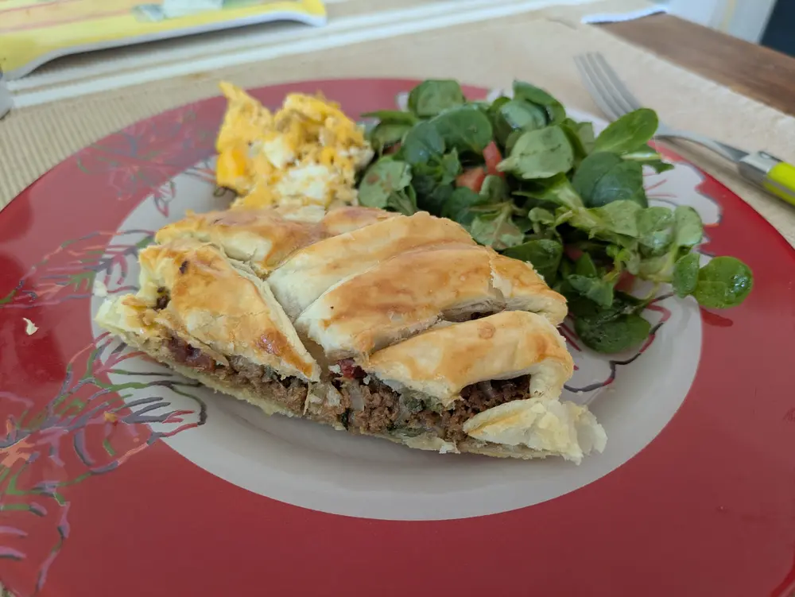

Recipe | Veg braid

Veg braid
Ingredients
For 4 people:
- Vegan minced meat
- 1 onion
- Parsley
- Sage
- Paprika powder
- Thyme
- Italian pasta seasoning
- Nutmeg
- Salt and Pepper
- Dried tomatoes
- Cheese
- Puff pastry
Steps
- Preheat oven to 180°C
- Chop onions finely and fry them in some olive oil with chopped parsley.
- Add the vegan minced meat and add some more olive oil if too dry.
- While cooking for about 5 to 10 minutes, season with all the herbs, salt and pepper. Be generous with sage.
- Keep aside and spread out a sheet of puff pastry on a tray.
- Spread the cooked filling and garnish with dried tomatoes, some additional parsley and cheese.
- Slit the sides of the pastry diagonally into several strips. Fold over the middle over the filling in alternating folds to form the plait.
- Optionally baste with an egg yolk for golden crust.
- Bake for 20 to 30 min
- Serve with fresh salad